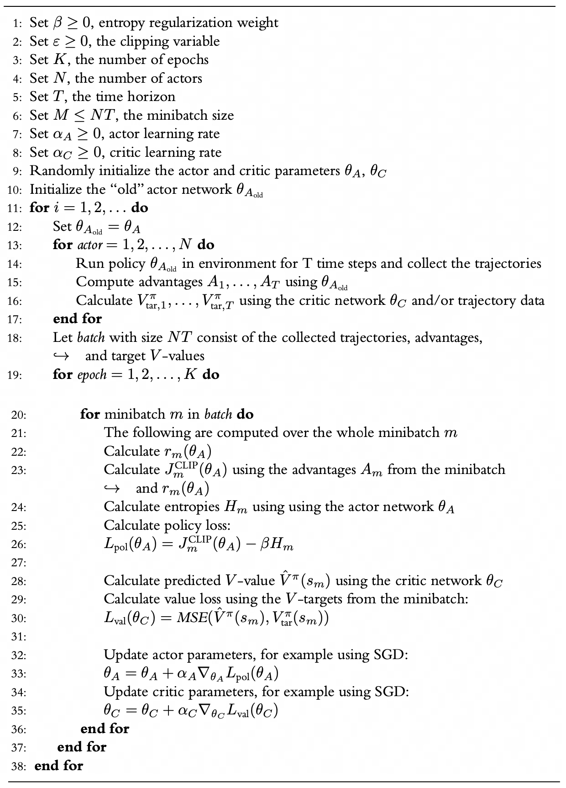

PPO¶

Figure: PPO algorithm pseudocode 1
module-attribute
¶
default_config = PPOConfig(env_name='CartPole-v1', render_mode=None, solved_threshold=475.0, gamma=0.99, lambda_=0.95, epsilon=0.2, entropy_coef=0.01, total_timesteps=1000000, time_horizons=256, update_epochs=4, num_minibatches=4, learning_rate=0.00025, log_wandb=True)
dataclass
¶
PPOConfig(env_name: str = 'CartPole-v1', num_envs: int = 4, render_mode: str | None = None, solved_threshold: float = 475.0, gamma: float = 0.999, lambda_: float = 0.98, epsilon: float = 0.2, entropy_coef: float = 0.01, total_timesteps: int = 500000, time_horizons: int = 128, update_epochs: int = 4, num_minibatches: int = 4, learning_rate: float = 0.00025, anneal_learning_rate: bool = True, log_wandb: bool = False)
Configuration for PPO algorithm.
class-attribute
instance-attribute
¶
num_envs: int = 4
The number of parallel game environments
class-attribute
instance-attribute
¶
time_horizons: int = 128
The number of time steps to collect before updating the policy
class-attribute
instance-attribute
¶
update_epochs: int = 4
The K epochs to update the policy
Bases: Module
Source code in toyrl/ppo.py
41 42 43 44 45 46 47 48 49 50 | |
CriticValueNet(env_dim: int)
Bases: Module
Source code in toyrl/ppo.py
57 58 59 60 61 62 63 64 65 66 | |
dataclass
¶
Experience(env_id: int, terminated: bool, truncated: bool, observation: Any, reward: float, next_observation: Any, action: Any, action_logprob: float, advantage: float | None = None, target_value: float | None = None)
dataclass
¶
__len__() -> int
Source code in toyrl/ppo.py
92 93 | |
add_experience(experience: Experience) -> None
Source code in toyrl/ppo.py
95 96 97 | |
reset() -> None
Source code in toyrl/ppo.py
99 100 101 | |
sample() -> list[Experience]
Source code in toyrl/ppo.py
103 104 | |
PPOAgent(actor: ActorPolicyNet, critic: CriticValueNet, optimizer: Optimizer)
Source code in toyrl/ppo.py
108 109 110 111 112 | |
add_experience(experience: Experience) -> None
Source code in toyrl/ppo.py
114 115 | |
reset() -> None
Source code in toyrl/ppo.py
117 118 | |
Source code in toyrl/ppo.py
120 121 122 123 124 125 126 127 | |
net_update(num_minibatches: int, gamma: float, lambda_: float, epsilon: float, entropy_coef: float) -> float
Source code in toyrl/ppo.py
129 130 131 132 133 134 135 136 137 138 139 140 141 142 143 144 145 146 147 148 149 150 151 152 153 154 155 156 157 158 159 160 161 162 163 164 165 166 167 168 169 170 171 172 173 174 175 176 177 178 | |
PPOTrainer(config: PPOConfig)
Source code in toyrl/ppo.py
210 211 212 213 214 215 216 217 218 219 220 221 222 223 224 225 226 | |
train()
Source code in toyrl/ppo.py
237 238 239 240 241 242 243 244 245 246 247 248 249 250 251 252 253 254 255 256 257 258 259 260 261 262 263 264 265 266 267 268 269 270 271 272 273 274 275 276 277 278 279 280 281 282 283 284 285 286 287 288 289 290 291 292 293 294 295 296 297 298 299 300 301 302 303 304 305 | |
-
L. Graesser and W. L. Keng, Foundations of deep reinforcement learning: Theory and practice in python. Addison-Wesley Professional, 2019. ↩